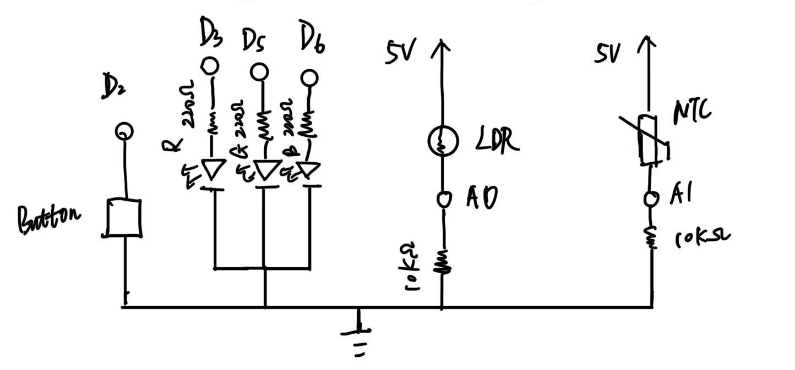
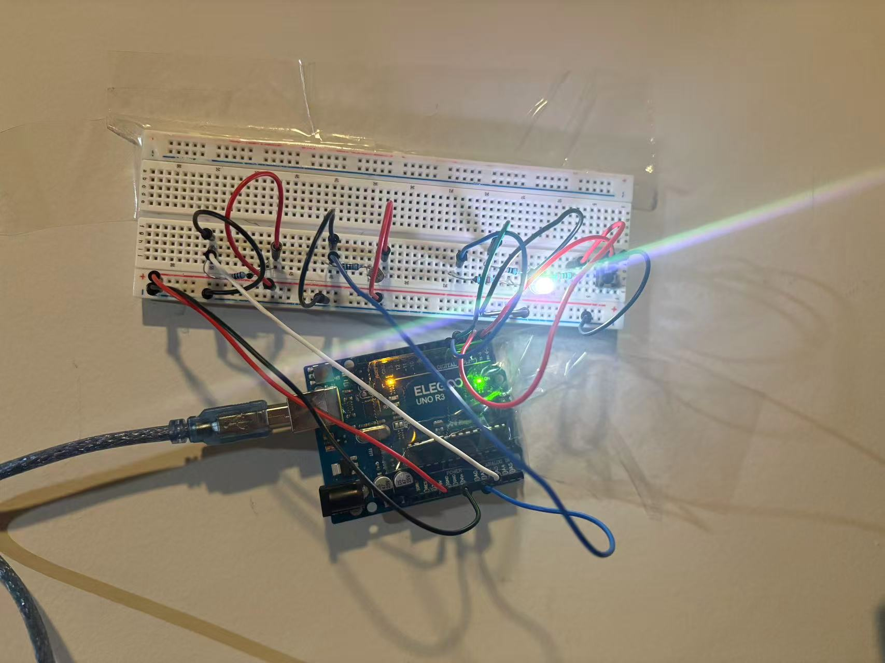

Problem
Smart Night Light is designed to create a seamless lighting experience that adapts naturally to daily study and rest routines. Using a light sensor (LDR) and a temperature sensor (NTC), the lamp detects environmental brightness and warmth, automatically shifting its color temperature to match the user's needs: cooler tones for focus in brighter environments, and softer warm tones when the surroundings grow dim.
A single-button interaction keeps the experience simple: short press to resample the environment, long press to enter a warm breathing-light Relax Mode, and double-click to turn the lamp off instantly. Through adaptive sensing and minimal interaction, the design delivers a calm, intuitive lighting system that supports both productivity and relaxation.
Smart Night Light offers an adaptive and emotionally calming lighting experience designed for safe and comfortable nighttime use.
Through ambient sensors, the light automatically adjusts its brightness and warmth based on the environment—becoming softer and warmer when the room is dark, and brighter only when necessary.
A single-button interaction allows users to resample the environment, activate a warm breathing Relax Mode, or quickly turn the light off without disrupting their night routine.
This creates a low-glare, low-effort lighting solution that supports comfort, reduces nighttime anxiety, and helps users move safely in the dark.
Schematic Explanation:
analogWrite() output PWM(0-255)，实现亮度与颜色混合。map() and constrain() mapped to brightness levels of 0-100.The program combines brightness and tempLevel into a single color temperature factor:
float coolFactor = (brightness * 0.6 + tempLevel * 0.4) / 100.0;RGB values are automatically calculated based on coolFactor:
millis() calculating the duration of pressure to determine the behavior:Three key state variables control the behavior of the light:
relaxMode: the breathing is light on or off.lightOff: the light is turned off or not.needResample: the target color is updated or not.Core logic:
if (lightOff) → light off
else if (relaxMode) → breathing mode
else {
if (needResample) Update color
fadeStep(); Smooth transition
}
The lights won't change abruptly; instead, they will gradually change using the `approach()` function.
curR = approach(curR, targetR, 2);This type of light is soft and not glaring, making it more suitable as a night light.
Using sine waves to generate rhythmic brightness variations:
float breath = (sin(breathPhase) + 1) / 2;Based on a warm color scheme, the brightness fluctuates according to the rhythm of "inhalation-exhalation" to create a sleep-inducing atmosphere.
The Arduino continuously collects data from its sensors and uses this information to generate adaptive nighttime lighting behavior.
A photoresistor (LDR) connected to A0 measures room brightness, allowing the system to determine whether the environment is dark, dim, or bright.
Meanwhile, an NTC thermistor on A1 provides relative temperature information, helping to fine-tune the light's color temperature, making it slightly cooler or warmer depending on the surrounding environment.
A single touch button connected to D2 manages all user interactions.
Finally, the Arduino uses its PWM outputs (D3, D5, D6) to drive the RGB LED. By precisely adjusting the duty cycle of each color channel, the system produces smooth, gradual transitions between warm and cool tones.
This ensures the nightlight feels soft, natural, and comfortable—never abrupt or glaring.


// Smart Study Light_Final Version with DOUBLE-CLICK OFF
const int PIN_LDR = A0;
const int PIN_NTC = A1;
const int PIN_BUTTON = 2;
const int PIN_R = 3;
const int PIN_G = 5;
const int PIN_B = 6;
// Button
unsigned long pressStart = 0;
unsigned long lastPressTime = 0;
bool buttonPressed = false;
bool longPressHandled = false;
unsigned long clickInterval = 400; // double-click window
int clickCount = 0;
const unsigned long LONG_PRESS_MS = 800;
// Modes
bool relaxMode = false;
bool needResample = true;
bool lightOff = false; // the lights off
// Breathing
float breathPhase = 0.0;
float breathSpeed = 0.02;
int baseR = 255, baseG = 120, baseB = 40;
// Colors
int curR = 0, curG = 0, curB = 0;
int targetR = 0, targetG = 0, targetB = 0;
void setup() {
Serial.begin(9600);
pinMode(PIN_BUTTON, INPUT_PULLUP);
pinMode(PIN_R, OUTPUT);
pinMode(PIN_G, OUTPUT);
pinMode(PIN_B, OUTPUT);
fadeToColor(255, 180, 120);
}
void loop() {
handleButton();
// No mode is activated when the lights are off.
if (lightOff) {
setColor(0,0,0);
return;
}
if (relaxMode) {
runRelaxBreathing();
} else {
if (needResample) {
updateColorFromSensors();
needResample = false;
}
fadeStep();
}
delay(15);
}
// BUTTON HANDLING
void handleButton() {
bool isPressed = (digitalRead(PIN_BUTTON) == LOW);
// Pressing the button instantly
if (isPressed && !buttonPressed) {
buttonPressed = true;
longPressHandled = false;
pressStart = millis();
// DOUBLE CLICK DETECTION
if (millis() - lastPressTime < clickInterval) {
clickCount++;
} else {
clickCount = 1;
}
lastPressTime = millis();
}
// Release the moment
if (!isPressed && buttonPressed) {
unsigned long pressDuration = millis() - pressStart;
buttonPressed = false;
// DOUBLE CLICK: turn OFF
if (clickCount == 2 && pressDuration < LONG_PRESS_MS) {
clickCount = 0;
turnLightOff();
Serial.println("DOUBLE CLICK → LIGHT OFF");
return;
}
// SHORT PRESS
if (!longPressHandled && pressDuration < LONG_PRESS_MS) {
if (lightOff) {
lightOff = false;
}
needResample = true;
Serial.println("SHORT press → sample sensors");
}
}
// LONG PRESS
if (buttonPressed &&
!longPressHandled &&
(millis() - pressStart > LONG_PRESS_MS)) {
longPressHandled = true;
relaxMode = !relaxMode;
Serial.print("LONG press → Relax Mode = ");
Serial.println(relaxMode ? "ON" : "OFF");
}
}
// LIGHT OFF FUNCTION
void turnLightOff() {
lightOff = true;
setColor(0,0,0);
}
// SENSOR → COLOR MAPPING (Main Logic)
void updateColorFromSensors() {
int ldrVal = analogRead(PIN_LDR);
int ntcVal = analogRead(PIN_NTC);
float brightness = map(ldrVal, 300, 800, 0, 100);
brightness = constrain(brightness, 0, 100);
float tempLevel = map(ntcVal, 300, 700, 0, 100);
tempLevel = constrain(tempLevel, 0, 100);
float coolFactor = (brightness * 0.6 + tempLevel * 0.4) / 100.0;
targetR = 200 - coolFactor * 120;
targetG = 120 - coolFactor * 60;
targetB = 40 + coolFactor * 120;
targetR = constrain(targetR, 0, 255);
targetG = constrain(targetG, 0, 255);
targetB = constrain(targetB, 0, 255);
}
// RELAX MODE (Breathing Animation)
void runRelaxBreathing() {
breathPhase += breathSpeed;
if (breathPhase > 6.28) breathPhase = 0;
float breath = (sin(breathPhase) + 1.0) / 2.0;
int R = baseR * (0.2 + breath * 0.6);
int G = baseG * (0.2 + breath * 0.6);
int B = baseB * (0.2 + breath * 0.6);
setColor(R, G, B);
}
// COLOR OUTPUT FUNCTIONS
void fadeToColor(int r, int g, int b) {
targetR = r;
targetG = g;
targetB = b;
}
void fadeStep() {
curR = approach(curR, targetR, 2);
curG = approach(curG, targetG, 2);
curB = approach(curB, targetB, 2);
setColor(curR, curG, curB);
}
int approach(int current, int target, int step) {
if (current < target) return min(current + step, target);
if (current > target) return max(current - step, target);
return current;
}
void setColor(int r, int g, int b) {
analogWrite(PIN_R, r);
analogWrite(PIN_G, g);
analogWrite(PIN_B, b);
}